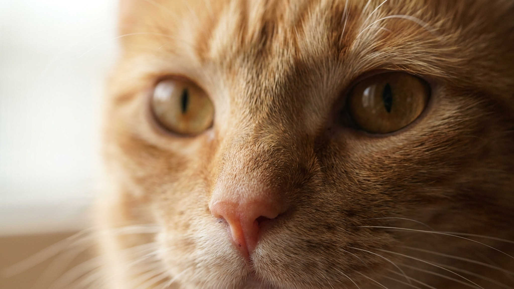

Утром уходишь на работу, а вслед смотрят два глаза — и внутри шевелится вина: не слишком ли надолго? Хорошая новость: дело не в одних часах, а в возрасте, привычке и том, чем занят питомец в ваше отсутствие. Одна и та же цифра для щенка — испытание, а для взрослой кошки — обычный день. Ниже — понятные ориентиры для собак и кошек, признаки, что питомцу правда тяжело одному, и что помогает скрасить ожидание.
🐾 Что делать, если что-то пойдёт не так
AnimaLife подскажет первые шаги при отравлении, травме, перегреве или укусе — ещё до того, как вы доедете до врача. Пусть будет под рукой.
Открыть первую помощь → Открыть в MAX →
У вас iPhone? AnimaLife есть в App Store
Главное ограничение у собак — не скука, а туалет и потребность в движении. Отсюда простые ориентиры для здоровой собаки, приученной оставаться одной:
Восемь-девять часов рабочего дня — уже много: разумно разбить их выгулом в середине или помощником.
Кошки переносят одиночество спокойнее — они территориальны и спят большую часть дня. Взрослая кошка с водой, кормом, чистым лотком и игрушками обычно спокойно проводит рабочий день одна, а при необходимости — сутки. Дольше суток без присмотра оставлять не стоит: лоток, вода и просто чьё-то внимание нужны каждый день. Котята же, как и щенки, требуют куда более частых визитов.
Иногда причина не в часах, а в том, что питомец не умеет оставаться один. На это указывают:
Если это повторяется, речь уже не о длительности, а о тревоге разлуки — её стоит обсудить с ветеринаром или зоопсихологом.
🐾 Поставьте приложение заранее
Первая помощь, дневник здоровья и AI-ветеринар 24/7 — в одном месте. Бесплатно: установите, пока не понадобилось.
Установить AnimaLife → Открыть в MAX →
У вас iPhone? AnimaLife есть в App Store
🐾 Понравился разбор?
Подпишитесь на канал — каждый день разбираем по одному тревожному симптому у кошек и собак: что в пределах нормы, а когда пора к врачу. Подпишитесь, чтобы не пропустить разбор, который может спасти здоровье вашего питомца.
Одиночество переносится легче, когда день насыщен и предсказуем. Выгуляйте или как следует поиграйте с питомцем перед уходом — уставший чаще спит. Оставьте кормушку-головоломку или спрятанные лакомства, чтобы дать «работу». Обеспечьте воду, доступ к любимому месту у окна и привычный фоновый шум. И приучайте к одиночеству постепенно, короткими отлучками с юного возраста — так «дома один» становится нормой, а не стрессом.
Материал носит информационный характер и не заменяет очную консультацию ветеринара.